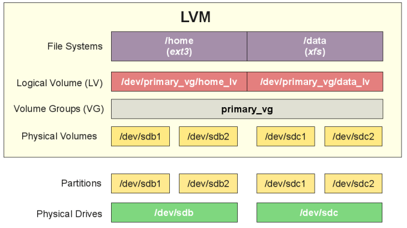

LVM
Working with the Logical Volume Manager

References
LVM Storage Management is divided into three parts:
- Physical Volumes (PV) – Actual disks or disk partitions (e.g. /dev/sda, /dev/sda2)
- Volume Groups (VG) – Physical volumes are combined into volume groups. (e.g. VolGroup1 = /dev/sda + /dev/sdb2)
- Logical Volumes (LV) – Volume groups are divided into logical volumes (e.g. VolGroup1 = LogicalVol1/data, LogicalVol2/home)
Commands
Display Disk Information
fdisk -l
Display LVM Mapping
lvmdiskscan
Display Physical Volumes
pvspvdisplay
Display Volume Groups
vgsvgdisplay
Display Logical Volumes
lvslvdisplay
STEPS
- Run LVM Scan to determine available disks -
lvmdiskscan
root@hostname:/# lvmdiskscan
/dev/VolGroup1/LogicalVol1 [ 3.72 GiB]
/dev/sda1 [ 285.00 MiB]
/dev/VolGroup1/LogicalVol2 [ 3.72 GiB]
/dev/VolGroup1/LogicalVol3 [ <20.49 GiB]
/dev/VolGroup1/LogicalVol4 [ 16.76 GiB]
/dev/VolGroup1/LogicalVol5 [ 18.62 GiB]
/dev/sda5 [ <79.72 GiB] LVM physical volume
/dev/VolGroup1/LogicalVol0 [ <7.45 GiB]
/dev/sdb [ 40.00 GiB]
1 disk
7 partitions
0 LVM physical volume whole disks
1 LVM physical volume
- Establish another Physical Volume (PV) for the newly installed SCSI disk /dev/sbd -
pvcreate
root@hostname:/# pvcreate /dev/sdb
Physical volume "/dev/sdb" successfully created.
- List available Volume Groups (VG) -
vgs
root@hostname:/# vgs
VG #PV #LV #SN Attr VSize VFree
VolGroup1 1 6 0 wz--n- 79.71g <8.95g
- Add new PV to current VG (VolGroup1) -
vgextend
root@hostname:/# vgextend VolGroup1 /dev/sdb
Volume group "VolGroup1" successfully extended
- Find the Logical Volume to extend -
lsblk
root@hostname:/# lsblk
NAME MAJ:MIN RM SIZE RO TYPE MOUNTPOINT
fd0 2:0 1 4K 0 disk
sda 8:0 0 80G 0 disk
├─sda1 8:1 0 285M 0 part /boot
├─sda2 8:2 0 1K 0 part
└─sda5 8:5 0 79.7G 0 part
├─VolGroup1-LogicalVol1 253:0 0 3.7G 0 lvm /
├─VolGroup1-LogicalVol2 253:1 0 3.7G 0 lvm /tmp
├─VolGroup1-LogicalVol3 253:2 0 20.5G 0 lvm /usr
├─VolGroup1-LogicalVol4 253:3 0 46.8G 0 lvm /var
├─VolGroup1-LogicalVol5 253:4 0 18.6G 0 lvm /home
└─VolGroup1-LogicalVol0 253:5 0 7.5G 0 lvm [SWAP]
sdb 8:16 0 40G 0 disk
└─VolGroup1-LogicalVol4 253:3 0 46.8G 0 lvm /var
sr0 11:0 1 1024M 0 rom
- Extend the logical volume by 30GB -
lvextend
root@hostname:/# lvextend -L+30G /dev/VolGroup1/LogicalVol4
Size of logical volume VolGroup1/LogicalVol4 changed from 16.76 GiB (4291 extents) to 46.76 GiB (11971 extents).
Logical volume VolGroup1/LogicalVol4 successfully resized.
It’s also possible to extend the logical volume to an exact size, using lvextend -L50G /dev/VolGroup1/LogicalVol4 would expand the LV to 50GB
- Extend the file system on
/dev/VolGroup1/LogicalVol4to include the new storage capacity -resize2fs
root@hostname:/# resize2fs /dev/VolGroup1/LogicalVol4
resize2fs 1.44.1 (24-Mar-2018)
Filesystem at /dev/VolGroup1/LogicalVol4 is mounted on /var; on-line resizing required
old_desc_blocks = 2, new_desc_blocks = 3
The filesystem on /dev/VolGroup1/LogicalVol4 is now 12258304 (4k) blocks long.
Last modified May 10, 2021: ADD: front-matter to notebook files (c9fea35)